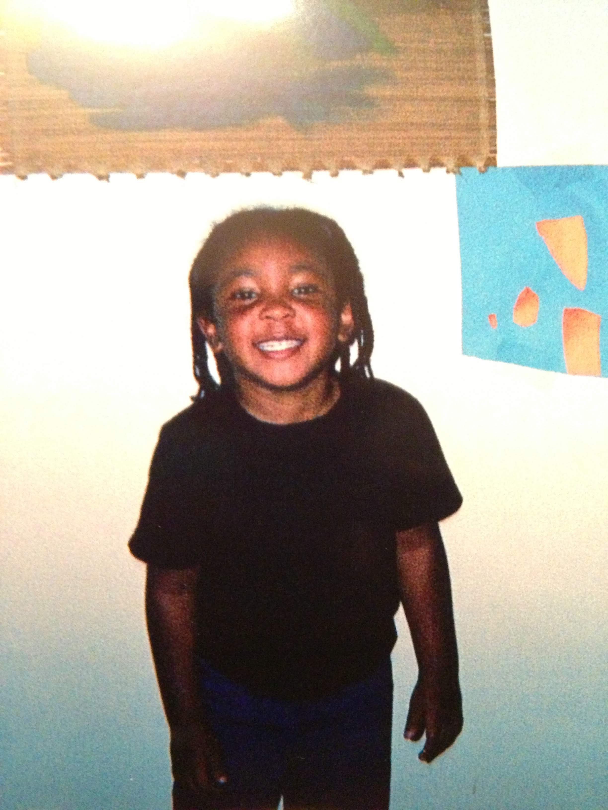

The Curious Kid
My journey into development started long before I wrote my first line of code. As a kid, I was the one taking toys apart just to see how they worked. That curiosity has been with me my whole life, even when others didn't see my potential.
